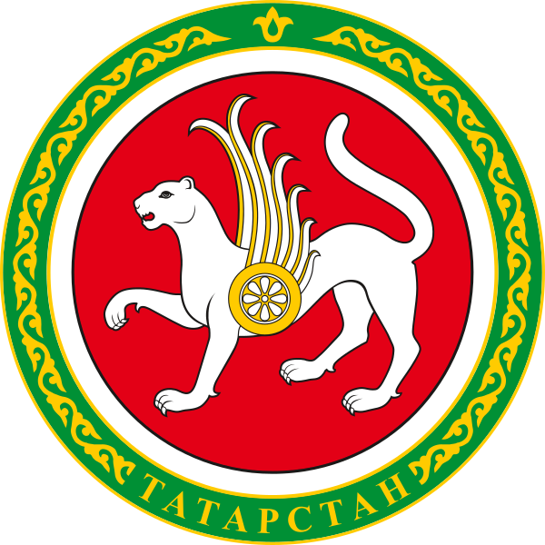

Мониторинг розничной торговли
Данные кассовых чеков ФНС: динамика цен по брендам, сетям и муниципалитетам, оборот и объёмы продаж, присутствие местных товаропроизводителей на полке.
52 категории социально значимых товаров

ГКУ «Центр цифровой трансформации РТ» · Республика Татарстан
Платформа полного цикла разработки аналитических решений: сбор данных с любых источников, хранение структурированных и неструктурированных форматов, разработка моделей искусственного интеллекта, обработка и визуализация в конструкторе аналитических панелей — в режиме реального времени.
Что это
Данные органов власти РТ разрознены, доступ к ним сложен, а управленческая отчётность формируется долго. Татсфера объединяет весь путь данных — от извлечения из источника до дэшборда на экране руководителя — и поддерживает форматы CSV, JSON, XML, AVRO, ORC, Parquet и подключение к PostgreSQL, MySQL, Hive, Greenplum, Dremio и другим СУБД.
Пакетный и потоковый приём данных из региональных и федеральных ИС, оркестрация процессов, каталог данных и единый бизнес-глоссарий показателей.
Хранение данных в исходном формате в распределённой файловой системе и массово-параллельная обработка больших объёмов с шифрованием данных и соединений.
Единая точка доступа к региональным данным без необходимости физически переносить их в централизованное хранилище. Доступ по JDBC/ODBC.
Автоматическая классификация источников, интеллектуальный поиск по всему ландшафту, методология расчёта показателей и владелец у каждого атрибута.
Дэшборды для смартфона и больших мониторов, виджеты по прямой ссылке, выгрузка в Excel/CSV/PDF. Блокноты на Python, Java и Scala с GPU-узлами для ML.
Управление кластером через веб-интерфейс, контроль жизнеспособности компонентов, ролевая модель доступа, SAML 2.0 и OpenID Connect.
Структурированные и неструктурированные данные по известным протоколам обмена; форматы CSV, JSON, XML, AVRO, ORC, Parquet.
Виртуализация данных скрывает гетерогенность источников и сложность ИТ-ландшафта — пользователь работает с данными из одной точки.
Физическая, логическая и концептуальная модели предметных областей; формирование датасетов и дэшбордов.
Блокноты на Python, Java, Scala и подключение вычислительных узлов с графическими процессорами для обучения моделей.
Прикладные решения
Каждое приложение собирается на конструкторе и работает с одной и той же цифрой для всех уровней управления — от министерства до главы района.
Данные кассовых чеков ФНС: динамика цен по брендам, сетям и муниципалитетам, оборот и объёмы продаж, присутствие местных товаропроизводителей на полке.
Потребность в товарах по муниципалитетам, товары, ввозимые из соседних регионов, потенциальные конкуренты, промышленные парки, меры господдержки и продовольственный баланс.
Тепловая карта решённых заявок, статусы и категоризация, муниципальный разрез, сезонность и прямой переход к заявке в исходной системе.
Тепловая карта долга по муниципалитетам и управляющим компаниям, динамика начислений и оплат по месяцам, разрезы до дома, лицевого счёта и услуги.
Анализ электронной очереди здравоохранения: нехватка специалистов по учреждениям, недоступные для населения услуги, контроль своевременности размещения талонов.
Рабочее место руководителя: здравоохранение, торговля, туризм, обращения жителей, ЖКХ и социально-экономическое развитие — на одном экране.
Отображение информации с координатной привязкой: кластеры, точки и полигоны на картографической подложке для управления земельным фондом.
Process Mining услуги «Установление статуса многодетной семьи» по всем муниципалитетам: где время оказания выше среднего и на каких этапах теряется время.
Динамика потребительских цен по регионам ПФО и муниципалитетам с разрезом по категориям — от продовольственных до непродовольственных товаров.
Ценность для региона
Татсфера — это «данные как услуга»: пользователь быстро получает доступ к данным, анализирует их и извлекает полезную информацию — без запросов, согласований и ручных выгрузок.
Разрозненные данные ИС республики и федеральных систем — из одной точки, в режиме реального времени.
Управленческие отчёты формируются конструктором, а не ручной обработкой выгрузок.
Общая инфраструктура вместо дублирующих хранилищ в каждом ведомстве.
Ролевая модель, минимизация полномочий, хеширование паролей, логирование всех действий.
Совместимость с технологиями искусственного интеллекта и открытый стек для сторонних команд.
Центр компетенций по управлению данными: обучение госслужащих, архитектурный надзор, каталогизация.
На базе ГКУ «Центр цифровой трансформации» сформирован Центр компетенций, который сопровождает ведомства на всём пути работы с данными.
Внедрение
Технологический стек платформы открыт и стандартен: к проектам привлекаются команды из любого региона без дополнительного обучения, а конкуренция подрядчиков снижает стоимость работ.
Определяем перечень информационных систем и файлов, из которых собираются показатели.
Расчёт вычислительных ресурсов и выбор площадки: облако или оборудование заказчика.
Договорённости с поставщиками данных о составе и порядке передачи.
Круг пользователей, ролевая модель и разграничение доступа к данным.
Подготовка специалистов: SQL, дата-лаборатория, конструктор отчётов.
Выход приложений в эксплуатацию и передача сопровождения.
Роли в проекте: ЦЦТ РТ → функциональный заказчик → подрядчик.